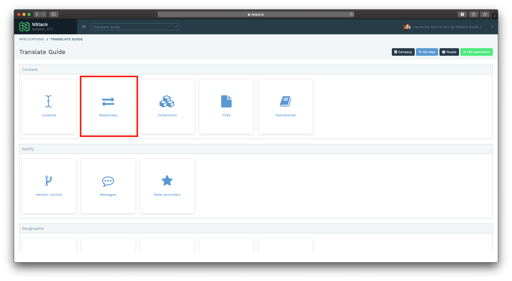

NStack guide - Responses
- Overview
- Accessing the Respionses system
- Adding a new response
- Updating a response
- Deleting a response
- Restoring a deleted response
Overview
System overview
The purpose of the Responses feature in NStack is to enable you, as a client, to be able to control certain information shown in the app. As the Responses feature is very versatile the usage of it depends on what it is used for in the app. The system is hosted on Monstarlab servers, and you gain access to the system by having a Nodes employee inviting you via email. See the Getting started guide for more info on accessing NStack.
Guide overview
The purpose of this guide is to present the Responses feature of NStack and one of it's possible use cases. The guide does not cover any other aspects of NStack, for information on other features or more use cases for responses, refer to the feature overview.
Accessing the Responses system
After logging in, assuming you have just one project, you will be presented with the following screen. If you have access to multiple projects, you'll have to select a project first. Press the "Responses" button to access the Responses feature of NStack.

Adding a new response
When entering the Response feature of NStack, you will see an overview of all the responses you have already created. If this is your first time in the Responses feature there will be no responses.
Press the "Create" button to add a new response.

You will be asked to give the new response a "Slug" and the JSON you want to return when asking for the response. The slug is the name that will be used going forward and as mentioned above the JSON will be returned when this specific response is retrieved. Press the "Create" button to save your response.

Updating a response
When in the responses overview you can press the "pencil" button to modify that response.

Press the "Update" button when you are satisfied with the changed you have made.
Deleting a response
When in the responses overview you can press the "cross" button to delete a response.
You will be prompted with a deletion confirmation, press the "Delete" button if you are sure you want to delete the response.

Restoring a deleted response
To see your deleted responses press the "Deleted" button at the top of the responses. This will list all the responses you have deleted.

To restore a deleted response and make it active again press the "Play" button on the response you want to restore.

You will be prompted with a dialog to confirm if you want to restore the response, press the "OK" button if you are sure you want to restore the response.

Return back to the "Active" section to see your restored response.